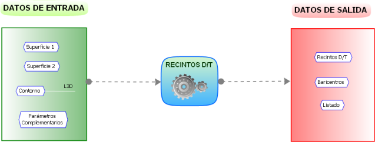

Bir kontur içinde iki yüzeyi karşılaştırır ve her iki yüzey arasındaki kesişimlerin oluşturduğu farklı kapalı alanları oluşturarak yarma ve dolgu bölgelerini sınırlar.

Temel parametreler olarak, bu yardımcı program aşağıdakileri gerektirir:
- Yarma ve dolgu alanlarını belirlemek için karşılaştırma yüzeyleri (orijinal ve nihai).
- Çalışma alanını sınırlayan Kontur.
- Karşılaştırmada yüzeylerin analiz yöntemi:
- Seçilen kontur içinde üçgenleme yaparak (daha hassas).
- Belirli bir çözünürlüğe sahip kare bir grid'e göre veri alarak (daha hızlı).
- Yarma ve dolgu alanları için çizgi tipi. Dolgulu bir çizgi tipi olması tavsiye edilir.
Parametreler ayarlandıktan sonra, [Oluştur] (YARMA/DOLGU ALANLARI'na karşılık gelen) butonuna basıldığında program bu alanların çizimini hesaplar ve oluşturur.
Buradan veya programın başka bir menüsünden oluşturulan yarma veya dolgu alanlarıyla sınırlanan kütlelerin ağırlık merkezlerini hesaplama imkanı vardır. Bunun için, yarma ve dolgu için bildirilen tiplerdeki çizgiler ve tanımlanan yüzeyler alınır ve aşağıdaki parametreler ayarlanır:
- Listelerde dikkate alınacak yarma ve dolgu alanlarının minimum hacmi.
- Ağırlık merkezlerini etiketlemek için sembol ve metin tipleri ile metin boyutu (Y_1, Y_2,...D_1, D_2,...); ayrıca her alana yarma veya dolgu hacmini etiketlemek de mümkündür.
Bu ek yardımcı program ayrıca, ağırlık merkezlerinin koordinatlarını ve alanın türüne göre yarma veya dolgu hacimlerini içeren bari.res listesini oluşturur. Hacim, çözünürlüğü de değişken bir veri olan bir grid ile ölçülür. bari.res listesi ayrıca yarma ve dolgu hacimlerini de içerir.
YD ve DD kutucuklarını işaretleyerek, alanları içerdikleri hacimle de etiketleyebiliriz.
|